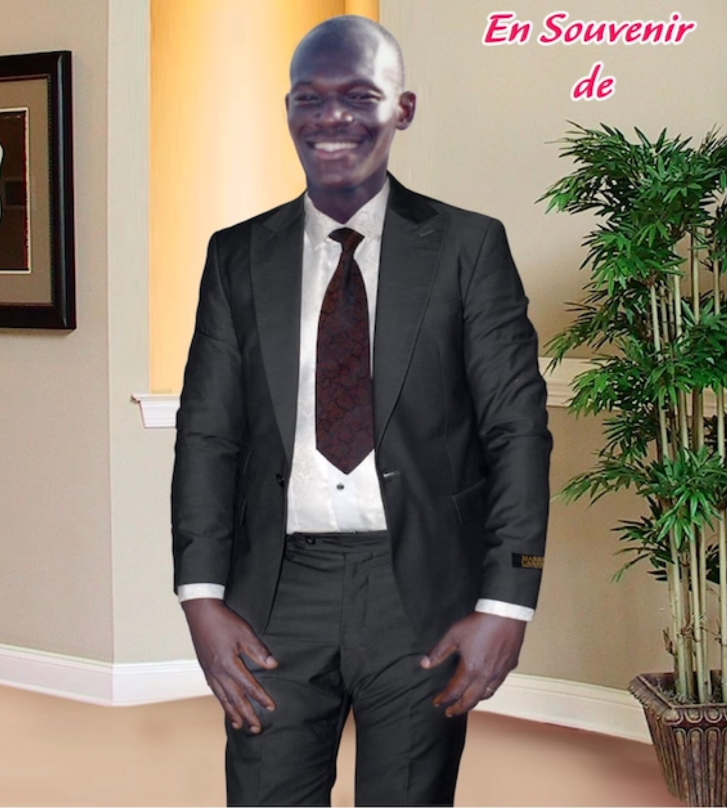

Fondation Césaire Maffon — Cotonou, BéninFondation Césaire Maffon — Cotonou, Bénin
A national programme to prevent cardiovascular deaths in Benin — through early screening, life-saving devices, and training for medical professionals.
Un programme national de prévention des maladies cardiovasculaires au Bénin — par le dépistage précoce, les dispositifs vitaux et la formation des professionnels de santé.
Who we areQui sommes-nous
Fondation Césaire Maffon is a non-profit organisation dedicated to improving the lives of people affected by cardiovascular disease in Benin, by making life-saving screening and treatment genuinely accessible.
La Fondation Césaire Maffon est une ONG dédiée à l'amélioration de la vie des personnes touchées par les maladies cardiovasculaires au Bénin, en rendant réellement accessibles le dépistage et les traitements qui sauvent des vies.
Improving access to cardiac screening, diagnosis, and patient follow-up so that no case goes undetected until it is too late.
Améliorer l'accès au dépistage cardiaque, au diagnostic et au suivi des patients afin qu'aucun cas ne passe inaperçu jusqu'à ce qu'il soit trop tard.
Providing pacemakers and ICDs (Implantable Cardioverter Defibrillators) to patients who cannot afford them, because access to technology should not depend on income.
Fournir des stimulateurs cardiaques et des DAI aux patients qui ne peuvent pas se les offrir, car l'accès à la technologie ne doit pas dépendre du revenu.
Equipping Beninese hospitals with essential diagnostic tools and building sustainable clinical partnerships with local and international experts.
Équiper les hôpitaux béninois d'outils de diagnostic essentiels et établir des partenariats cliniques durables avec des experts locaux et internationaux.
Preventing avoidable deaths from sudden cardiac arrest — the tragedy that took Césaire Maffon at just 30 years old, and drives everything we do.
Prévenir les décès évitables liés à un arrêt cardiaque soudain — la tragédie qui a emporté Césaire Maffon à seulement 30 ans et qui guide tout ce que nous faisons.
The challengeLe défi
In Benin, access to specialised cardiac care remains extremely limited. Patients arrive in crisis because they were never screened. Hospitals lack essential equipment. And without a pacemaker or ICD, a treatable condition becomes a death sentence.
Au Bénin, l'accès aux soins cardiaques spécialisés reste extrêmement limité. Les patients arrivent en crise car ils n'ont jamais été dépistés. Les hôpitaux manquent d'équipements essentiels. Et sans stimulateur cardiaque ou DAI, une pathologie traitable devient une condamnation à mort.
FCM exists to change this. We work with hospitals, cardiologists, and partner organisations to build a system where no patient is left behind.
La FCM existe pour changer cela. Nous travaillons avec les hôpitaux, les cardiologues et les organisations partenaires pour construire un système où aucun patient n'est laissé de côté.

A commitment of the heartUn engagement de cœur
A few years ago, my younger brother Césaire passed away at just 30 years old. He collapsed during a football match, suddenly struck by cardiac arrest — a life shattered in an instant.
Il y a quelques années, mon jeune frère Césaire est décédé à seulement 30 ans. Il s'est effondré pendant un match de football, soudainement victime d'un arrêt cardiaque — une vie brisée en un instant.
This tragedy could almost certainly have been prevented had he been diagnosed in time and fitted with an ICD. Many people living with cardiovascular disease are alive today because they had access to medical care and life-saving technology that my brother never had the chance to receive.
Ce drame aurait presque certainement pu être évité s'il avait été diagnostiqué à temps et équipé d'un DAI. Beaucoup de personnes vivant avec une maladie cardiovasculaire sont encore en vie aujourd'hui parce qu'elles ont eu accès à des soins médicaux et à une technologie salvatrice que mon frère n'a jamais eu la chance de recevoir.
It is so that other families in Benin do not endure the same pain that Fondation Césaire Maffon was created.
C'est pour que d'autres familles au Bénin ne vivent pas la même douleur que la Fondation Césaire Maffon a été créée.
"Because every heartbeat counts. Because behind every heartbeat lies a life, a family, and a future."
« Parce que chaque battement de cœur compte. Parce que derrière chaque battement de cœur se cache une vie, une famille et un avenir. »
What we doCe que nous faisons
Practical, concrete solutions — providing devices, equipping hospitals, and identifying patients before tragedy strikes.
Des solutions concrètes et pratiques — fournir des dispositifs, équiper les hôpitaux et identifier les patients avant qu'un drame ne survienne.
Collecting and providing pacemakers, ICDs, and other cardiac devices to patients in need across Benin.
Collecter et fournir des stimulateurs cardiaques, des DAI et d'autres dispositifs cardiaques aux patients qui en ont besoin.
Supporting hospitals with ECG machines, echocardiography equipment, AEDs and other tools for reliable cardiac diagnosis.
Soutenir les hôpitaux avec des appareils d'ECG, des échographes cardiaques, des DEA et d'autres outils pour un diagnostic fiable.
Organising screening days and awareness campaigns for high-risk populations — military personnel, athletes, communities.
Organiser des journées de dépistage et des campagnes de sensibilisation pour les populations à haut risque — militaires, sportifs, communautés.
BLS/ACLS training for health professionals and collaboration with local and international teams to share best practices in cardiology.
Formation BLS/ACLS pour les professionnels de santé et collaboration avec les équipes locales et internationales pour partager les meilleures pratiques en cardiologie.
Partnering with 5+ hospitals across Benin to build sustainable diagnostic and interventional cardiology capabilities.
Partenariat avec 5+ hôpitaux à travers le Bénin pour développer des capacités durables en cardiologie diagnostique et interventionnelle.
Supporting patients and families with psychological care, therapeutic education, and follow-up to improve treatment adherence.
Accompagner les patients et leurs familles avec des soins psychologiques, une éducation thérapeutique et un suivi pour améliorer l'adhésion au traitement.
ResultsRésultats
We are at the beginning of a long journey — but every device delivered and every patient screened represents a life with more time, dignity, and hope.
Nous sommes au début d'un long chemin — mais chaque dispositif fourni et chaque patient dépisté représente une vie avec plus de temps, plus de dignité et plus d'espoir.
People to be screened by 2030
Personnes à dépister d'ici 2030
Military FAB personnel targeted
Militaires des FAB ciblés
Healthcare professionals to train
Professionnels de santé à former
FCM's Benin delegation participated in Africa's largest cardiology congress, gaining international recognition and strengthening partnerships with leading cardiovascular experts.
La délégation béninoise de la FCM a participé au plus grand congrès de cardiologie d'Afrique, gagnant une reconnaissance internationale et renforçant les partenariats avec les experts cardiovasculaires.
~15 patients planned for pacemaker and ICD implantation, including Left Bundle Branch Area Pacing. Clinical support by Dr Clément Bars.
~15 patients prévus pour l'implantation de stimulateurs cardiaques et de DAI, dont la stimulation de la zone du faisceau de His gauche. Soutien clinique du Dr Clément Bars.
Cardiovascular screening programme launched for the Forces Armées du Bénin. Standardised 12-lead ECG protocol with triage and referral pathways.
Programme de dépistage cardiovasculaire lancé pour les Forces Armées du Bénin. Protocole ECG 12 dérivations standardisé avec triage et orientation vers les soins.
FCM is actively building its national funding coalition, with ongoing discussions with several major financial and corporate partners in Benin.
La FCM construit activement sa coalition nationale de financement, avec des discussions en cours avec plusieurs grands partenaires financiers et institutionnels au Bénin.
Our ecosystemNotre écosystème
FCM builds a credible national and international coalition to tackle cardiovascular disease in Benin.
La FCM bâtit une coalition nationale et internationale crédible pour lutter contre les maladies cardiovasculaires au Bénin.
Lead Hospital Partner
Centre hospitalier référent
Field & Screening Partner
Partenaire terrain & dépistage
International Expertise
Expertise internationale
Founding Partner
Partenaire fondateur
Support our workSoutenez notre travail
A strategic partnership — not a simple donation request. Join a credible national coalition and align your ESG commitments with measurable health impact in Benin.
Un partenariat stratégique — pas une simple demande de don. Rejoignez une coalition nationale crédible et alignez vos engagements ESG avec un impact sanitaire mesurable au Bénin.
Material, logistical or in-kind support. Participation in field events. Local visibility.
Soutien matériel, logistique ou en nature. Participation aux événements terrain. Visibilité locale.
Fund a specific programme axis — military screening, BLS training, or equipment donation. Targeted visibility and reporting.
Financer un axe programme précis — dépistage militaire, formation BLS ou dons d'équipements. Visibilité ciblée et reporting dédié.
Multi-year structural contribution (3 years). Co-branding across all materials, presence at national events, dedicated impact report.
Contribution pluriannuelle structurante (3 ans). Co-branding sur tous les supports, présence aux événements nationaux, rapport d'impact dédié.
Flexible contributions also accepted — contact us to discuss a bespoke partnership arrangement.
Les contributions flexibles sont également acceptées — contactez-nous pour discuter d'un partenariat sur mesure.
Get in touchNous contacter
For device donations, partnerships, sponsorship, or financial support — reach out and we'll get back to you promptly.
Pour les dons de dispositifs, les partenariats, le parrainage ou le soutien financier — contactez-nous et nous vous répondrons rapidement.
Cotonou, Bénin